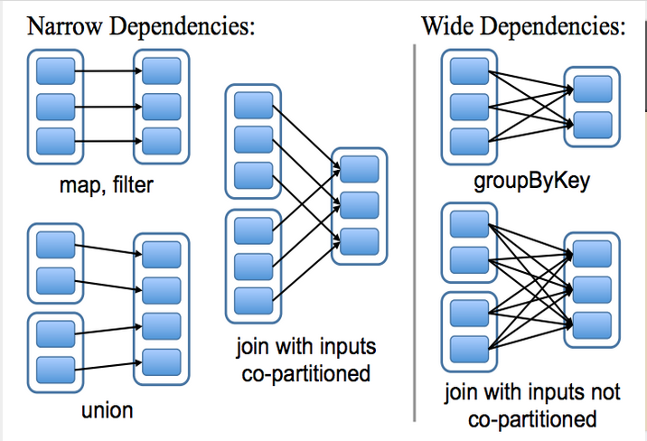
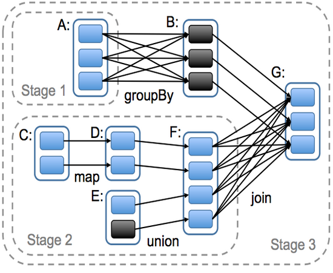

Feelin' the Flow
Getting your Data Moving with Spark and Cassandra
Presented by Rich Beaudoin / @RichGBeaudoinOctober 14th, 2014
About me...
- Sr. Software Engineer at Pearson
- Organizer of Distributed Computing Denver
- Lover of Music
- All around solid dude
Overview
- What is Spark
- The problem it solves
- The core concepts
- Spark integration with Cassandra
- Tables as RDDs
- Writing RDDs to Cassandra
- Spark Streaming and Cassandra
- Question and Summary
What is Spark?
Apache Spark™ is a fast and general engine for large-scale data processing.
Run programs up to 100x faster than Hadoop MapReduce in memory, or 10x faster on disk.
The Problem...
Approaches like MapReduce read from, and store to HDFS
...so each cycle of processing incurs latency from HDFS readsThere are existing solutions...
But each tend to solve a specialized problem, and all allow "fine-grain" (cell level) updates
Fine-grain updates complicate fault tolerance
Spark performs operations in-memory
Think of it as MapReduce where intermediate results are kept in memory
The key to making this work is a new data abstraction...
RDD
A Resilient Distributed Dataset (RDD) is an an immutable, partioned record that supports basic operations (e.g. map, filter, join). It maintains a graph of transformations in order to enable recovery of a lost partition
*See the RDD white paper for more details
Lineage Transformation
RDDs are Expressive
It turns out that coars-grained operations cover many existing parrallel computing cases
Consequently, the RDD abstraction can implement existing systems like MapReduce, Pregel, Dryad, etc.
Spark Cluster Overview

Spark can be run with Apache Mesos, HADOOP Yarn, or it's own standalone cluster manager
Job Scheduling and Stages
Spark and Cassandra
If we can turn Cassandra data into RDDs, and RDDs into Cassandra data, then the data can start flowing between the two systems and giving us some insight into our data.
The Spark Cassandra Connector allows us to perform the transformation from Cassadra table to RDD and then back again!
From Cassandra Table to RDD
import org.apache.spark._
import com.datastax.spark.connector._
val rdd = sc.cassandraTable("music", "albums_by_artist")
Run these commands spark-shell, requires specifying the spark-connector jar on the commandline
Simple MapReduce for RDD Column Count
val count = rdd.map(x => (x.get[String]("recordlabel"),1)).reduceByKey(_ + _)
Save the RDD to Cassandra
count.saveToCassandra("music", "labelcount",SomeColumns("label", "count")
Background Transition Override
You can override background transitions per slide by using data-background-transition="slide".
Clever Quotes
These guys come in two forms, inline:
“The nice thing about standards is that there are so many to choose from”
and block:
“For years there has been a theory that millions of monkeys typing at random on millions of typewriters would reproduce the entire works of Shakespeare. The Internet has proven this theory to be untrue.”
Pretty Code
function linkify( selector ) {
if( supports3DTransforms ) {
var nodes = document.querySelectorAll( selector );
for( var i = 0, len = nodes.length; i < len; i++ ) {
var node = nodes[i];
if( !node.className ) {
node.className += ' roll';
}
}
}
}
Courtesy of highlight.js.
Intergalactic Interconnections
You can link between slides internally, like this.
Fragmented Views
Hit the next arrow...
... to step through ...
any type- of view
- fragments
Fragment Styles
There's a few styles of fragments, like:
grow
shrink
roll-in
fade-out
highlight-red
highlight-green
highlight-blue
current-visible
highlight-current-blue
Spectacular image!

Export to PDF
Presentations can be exported to PDF, below is an example that's been uploaded to SlideShare.
Take a Moment
Press b or period on your keyboard to enter the 'paused' mode. This mode is helpful when you want to take distracting slides off the screen during a presentation.